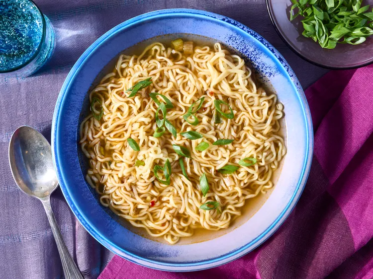

Ramen is a deeply comforting and complex Japanese noodle soup that has evolved from a humble street food into a global culinary phenomenon. At its core, a bowl of ramen is a masterful harmony of five distinct elements: the broth (dashi), the seasoning sauce (tare), the wheat noodles, the toppings, and an infused oil. Unlike standard soups, ramen is defined by the incredible depth of its broth, which is often simmered for hours—or even days—to extract maximum flavor and gelatin from ingredients like pork bones, chicken, seafood, and kelp, resulting in a rich, mouth-coating texture.